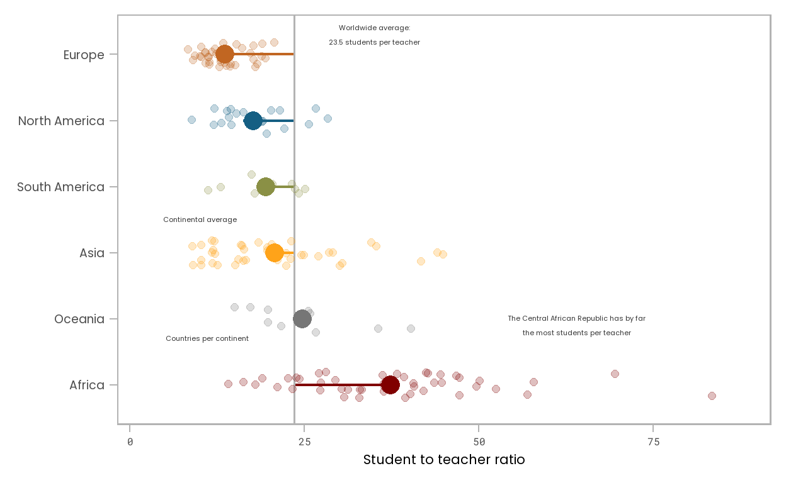

üèÜ Objectif de ce tutoriel
Dans ce tutorial l’objectif est de vous montrer comment transformer un ggplot par défaut en un graphique qui visualise les informations de manière attrayante et facilement compréhensible. Le but est de fournir un tutoriel étape par étape expliquant comment la visualisation a évolué à partir d’un ggplot de base typique. Tous les tracés vont être créés avec 100 % avec {ggplot2}.
A la fin de ce tutorial vous allez etre en mesure de faire le graphique suivant:

Vraiment cool, non? üÜí
Voici l’animation de la succession de graphique que vous allez devoir executer:

üíæ Pr√©paration des donn√©es
J‚Äôai pr√©par√© les donn√©es tout d‚Äôabord pour visualiser le ratio √©l√®ves-enseignant le plus r√©cemment enregistr√© dans l‚Äôenseignement primaire de chaque pays sous la forme d‚Äôune carte en mosa√Øque. Pour le deuxi√®me graphique √† c√¥t√© de la carte en mosaique, je voulais mettre en √©vidence la diff√©rence du ratio moyen d‚Äô√©tudiants par continent, mais sans √©carter les donn√©es brutes au niveau des pays. Par cons√©quent, j‚Äôai transform√© les informations pour chaque r√©gion pour repr√©senter les six continents √† l‚Äôexclusion de l‚ÄôAntarctique (hm, les pingouins ne vont-ils pas √† l‚Äô√©cole ?! On dirait que oui‚Ķ üêß) et j‚Äôai fusionn√© les deux ensembles de donn√©es dans un dataframe qui s‚Äôappelle df_ratios. Voici √† quoi ressemblent les colonnes pertinentes de l‚Äôensemble de donn√©es fusionn√©es et nettoy√©es, montrant deux exemples par continent¬†:
df_ratios %>% dplyr::select(indicator,country, region, student_ratio)üéã La bo√Æte √† moustaches par d√©faut
J’étais particulièrement intéressé par la visualisation du ratio élèves-enseignant le plus récent dans l’enseignement primaire par pays. Une manière habituelle de représenter plusieurs données par groupe consiste à utiliser une boîte à moustaches :
Utiliser la console pour générer le code qui produit les boites à moustaches:
ggplot(df_ratios, aes(x = region, y = student_ratio)) +
geom_boxplot()#ggplot(df_ratios, aes(x = ?, y = ?)) +
# geom_()ü뮂Äçüîß Triez les donn√©es
Une bonne routine avec ce type de données (qualitatives et non triées) consiste à organiser les boîtes à moustaches ou tout autre type, comme les barres ou les violons, dans un ordre décroissant pour simplifier la lisibilité. Étant donné que la catégorie “continent” n’a pas d’ordre intrinsèque, je réorganise les boîtes à moustaches en fonction de leur ratio moyen élèves-enseignant au lieu de les trier par ordre alphabétique, ce qui est la valeur par défaut :
df_sorted <-
df_ratios %>%
mutate(region = fct_reorder(region, -student_ratio_region))On peut donc obtenir la même visualisation que précédement mais avec les boites à moustaches triées:

ggplot(df_sorted, aes(x = region, y = student_ratio)) +
geom_boxplot()Hint: C’est le même code mais avec un dateframe différent.
üö®: Triez vos donn√©es par ordre croissant ou d√©croissant pour rendre votre graphique facilement lisible. Ne les triez pas si les cat√©gories ont un ordre logique, par ex. tranches d‚Äô√¢ge ou classes de revenus¬†!
Pour augmenter la lisibilité, nous allons inverser les coordonnées
(notez que nous pourrions également basculer les variables mappées sur x
et y dans l’appel ggplot et cela fonctionne maintenant
également pour la boîte à moustaches!). Comme certains ratios sont assez
proches de zéro, il peut également être judicieux d’inclure le 0 sur
l’axe des ordonnées. J’ajoute également un espace à droite
(principalement pour plus tard) que nous pouvons forcer en ajoutant
scale_y_continuous(limits = c(0, 90)) (soyez prudent ici
d’utiliser des limites qui dépassent les limites de vos données ou mieux
utilisez coord_ *(ylim = c(0, 90) pour ne pas créer
accidentellement de sous-ensembles de vos données). Voici le
résultat
Dans la boite de code, compléter le code ggplot qui vous permet de produire le graphique ci-haut:
ggplot(df_sorted, aes(x = region, y = student_ratio)) +
geom_boxplot() ggplot(df_sorted, aes(x = region, y = student_ratio)) +
geom_boxplot() +
coord_flip() +
scale_y_continuous(limits = c(0, 90))ggplot(df_sorted, aes(x = region, y = student_ratio)) +
geom_boxplot() +
coord_flip() üèÆ: Flipper votre graphique comme on l‚Äôas fait en cas d‚Äô√©tiquettes (nom des cat√©gories) longues permet augmenter la lisibilit√© et √©viter les chevauchements ou les rotations d‚Äô√©tiquettes¬†!
L’ordre des catégories est parfait tel qu’il est après avoir inversé les coordonnées - plus le ratio élèves-enseignant est bas, mieux c’est.
üîπ Faites briller votre graphique
Pimentons un peu notre graphique ! Le truc le plus extraordinaire à
propos de {ggplot2} est qu’il est structuré de manière
adaptative, permettant d’ajouter d’autres couches à un objet ggplot
existant. Nous allons utilisez un thème différent fourni avec le package
{ggplot2} en appelant theme_set(theme_light())
(plusieurs thèmes sont fournis avec le package {ggplot2}
mais si vous en avez besoin de plus, vérifiez par exemple les packages
{ggthemes} ou hrbrthemes), changer la police
et la taille globale de la police en ajoutant les arguments
base_size et base_family à
theme_light(), retourner les axes en ajoutant
coord_flip() (comme vu précédemment), laissez l’axe
commencer à 0 et réduisez l’espacement à la base du tracé en ajoutant
expand = c(0.02, 0.02) comme argument à
scale_y_continious(), ajoutez une couleur encodant le
continent en ajoutant color = region à l’argument
aes et en choisissant une palette dans le package
{ggsci}, ajouter des étiquettes significatives/supprimer
les étiquettes inutiles en ajoutant
labs(x = NULL, y = "title y") ajustez le nouveau thème (par
exemple, modifiez certains paramètres de police et supprimez la légende
et la grille) en ajoutant theme().
üí°: Vous pouvez facilement ajuster toutes les tailles du
thème en appelant theme_xyz(base_size = ) — c’est très
pratique si vous avez besoin de la même visualisation dans un but
différent !
üïØ: N‚Äôutilisez pas c(0, 0) pour l‚Äôoption expand
car le zéro est dans la plupart des cas trop proche de l’axe - utilisez
plutôt quelque chose de proche de zéro !
Je vais enregistrer l’objet ggplot et tous ces ajustements visuels
dans un objet ggplot que je nomme g afin que nous puissions
l’utiliser pour les prochains graphiques:
library(systemfonts)
library(ggsci)
theme_set(theme_light(base_size = 18, base_family = "Poppins"))
g <-
ggplot(df_sorted, aes(x = region, y = student_ratio, color = region)) +
coord_flip() +
scale_y_continuous(limits = c(0, 90), expand = c(0.02, 0.02)) +
scale_color_uchicago() +
labs(x = NULL, y = "Student to teacher ratio") +
theme(
legend.position = "none",
axis.title = element_text(size = 16),
axis.text.x = element_text(family = "Roboto Mono", size = 12),
panel.grid = element_blank()
)Ainsi quand j’ajoute geom_boxplot() à mon objet g
enregistré, j’obtiens:
g + geom_boxplot()
(Notez que pour inclure ces polices, nous utilisons le package
{systemfonts}. Ce package permet l’utilisation de polices système sans
avoir besoin d’importer ou d’enregistrer des polices. Et il permet même
d’utiliser divers poids et styles de police. Vous devez avoir (a) les
polices installées sur votre système et (b) le package
systemfonts installé.)
üíπ Le choix du type de graphique
Nous pouvons ajouter n’importe quel geom_ à notre object
ggplot g créé précedement. Ajouter des violin à
votre graphique et inscrire comme titre “violin plot”.
g 
g + geom_violin() + labs(title = "Violin plot")g + geom_violin() + g + geom_violin() + labs(title = "")Le box plot et le violin plot résument tous les deux les données, ils
contiennent beaucoup d’informations en visualisant la distribution des
données de deux manières différentes. En ajoutant un argument
alpha à geom_point(), le boxplot est capable
de mettre en évidence la plage principale des ratios élèves-enseignant
tout en affichant les données brutes. Tracer des points avec une taille
de 3 et une paramètre de transparence de 0.15
g g + geom_point(size = 3, alpha = 0.15)g + geom_point(size = , alpha = )Bien sûr, différentes geom_ peuvent également être combinées pour fournir encore plus d’informations dans un seul tracé. Ajouter le geom_point précédent au boxplot ci-bas avec les mêmes paramètres de taille et de transparence.
üö¶: Supprimez les valeurs aberrantes du box plot pour √©viter
le double encodage d’une même information ! Vous pouvez y parvenir via
outlier.alpha = 0, outlier.color = NA,
outlier.color = "transparent" ou
outlier.shape = NA.
Vous devriez obtenir le graphique ci-dessous:
A votre tour:
g +
geom_boxplot(color = "gray60", outlier.alpha = 0) 
g +
geom_boxplot(color = "gray60", outlier.alpha = 0) +
geom_point(size = 3, alpha = 0.15)g +
geom_boxplot(color = "gray60", outlier.alpha = 0) +
geom_point()Nous allons nous en tenir aux points pour visualiser explicitement
les pays au lieu d’agréger les données dans des diagrammes en boîte ou
en violon. Pour obtenir une meilleure lisibilité, nous utilisons un
autre geom, geom_jitter() qui disperse les points dans une direction
donnée (x et/ou y via la largeur (width) et la hauteur
(height) pour éviter le sur-tracé :
set.seed(2019)
g + geom_jitter(size = 2, alpha = 0.25, width = 0.2)üö•: D√©finissez une graine (seed) pour maintenir l‚Äôal√©at
autour des points fixe chaque fois que vous appelez
geom_jitter() en appelant set.seed(2019)—cela
devient particulièrement important lorsque nous étiquetons plus tard
certains des points.
üí°: Vous pouvez √©galement d√©finir la graine dans l‚Äôappel
geom_jitter() en définissant
position = position_jitter(seed). Notez que dans ce cas,
l’argument largeur (width) et/ou hauteur
(height) doit également être placé à l’intérieur de la
fonction position_jitter() :
g + geom_jitter(position = position_jitter(seed = 2019, width = 0.2), size = 2, alpha = 0.25)üîç Plus de Geoms, Plus de Fun, Plus d‚ÄôInfos !
Comme mentionné au début, notre intention est de visualiser à la fois
les ratios au niveau national et par continental, en plus de la carte
des des mosaiques. Jusqu’à présent, nous nous concentrions uniquement
sur les pays. Nous pouvons indiquer la moyenne continentale en ajoutant
une statistique descriptive via stat_summary() avec une
taille de point différente de celle des points de
geom_jitter(). Puisque la moyenne est plus importante ici,
je vais la mettre en évidence avec une taille plus grande et une
transparence nulle :

Comme vous le voyez, mes points moyens par continent sont gros (de taille 5). A votre tout, générer le graphique:
set.seed(2019)
g +
geom_jitter( size = 2, alpha = 0.25, width = 0.2) +
stat_summary(fun = mean, geom = "point", size = 5)set.seed(2019)
g 
set.seed(2019)
g +
geom_jitter( size = 2, alpha = 0.25, width = 0.2) set.seed(2019)
g +
geom_jitter( size = 2, alpha = 0.25, width = 0.2) +
stat_summary(fun = mean, geom = "point")Notez que nous pourrions également utiliser
geom_point(aes(x = region, y = student_ratio_region), size = 5)
pour obtenir la même chose puisque nous avons déjà une moyenne régionale
dans nos données.
Pour relier tous ces points à une ligne de base, nous allons ajouter une ligne indiquant la moyenne mondiale :
Pour ce faire, on va d’abord calculer le moyenne mondiale:
world_avg <-
df_ratios %>%
summarize(avg = mean(student_ratio, na.rm = TRUE)) %>%
pull(avg)
world_avg## [1] 23.51819## [1] 23.51819Vous devez donc maintenant reprendre votre graphique précedent et
ajouter la ligne globale avec un geom_hline. Dans mon
exemple, j’ai pris la color ‘gray70’ et une taille de 0.6.
set.seed(2019)
g +
stat_summary(fun = mean, geom = "point", size = 5) +
geom_jitter( size = 2, alpha = 0.25, width = 0.2)set.seed(2019)
g +
geom_hline(aes(yintercept = world_avg), color = "gray70", size = 0.6) +
stat_summary(fun = mean, geom = "point", size = 5) +
geom_jitter( size = 2, alpha = 0.25, width = 0.2)set.seed(2019)
g +
geom_hline(aes(yintercept = world_avg)) +
stat_summary(fun = mean, geom = "point", size = 5) +
geom_jitter( size = 2, alpha = 0.25, width = 0.2)üö•: On pourrait √©galement d√©river la moyenne mondiale dans
l’appel geom_hline() directement, mais je préfère garder
les deux étapes séparées.
Nous pouvons en outre souligner que la ligne de base est le ratio moyen mondial plutôt qu’un ratio de 0 (ou 1 ?) en ajoutant une ligne de chaque moyenne continentale à la moyenne mondiale. Voici le résultat à obtenir:
Pas de panique, je vous aiguiller pour faire cela. Les lignes noires
entre la moyenne globale verticale et les points moyens par continent
peuvent être obtenu en utilisant geom_segment. Il suffit de
lui indiquer le début et la fin du segment. On va utiliser les
informations que nous avons déjà dans notre base de donnée:
set.seed(2019)
g +
geom_segment(
aes(x = region, xend = region, # en x pas de segment
y = world_avg, yend = student_ratio_region), # en y on va de la moyenne générale à la moyenne par continent
size = 0.8
) A votre tour maintenant d’ajouter le geom_segment, afin
d’obtenir le graphique désiré:
set.seed(2019)
g +
geom_segment(
aes(x = region, xend = region,
y = world_avg, yend = student_ratio_region),
size = 0.8
) +
geom_hline(aes(yintercept = world_avg), color = "gray70", size = 0.6) +
geom_jitter(size = 2, alpha = 0.25, width = 0.2) +
stat_summary(fun = mean, geom = "point", size = 5)set.seed(2019)
g +
geom_hline(aes(yintercept = world_avg), color = "gray70", size = 0.6) +
geom_jitter(size = 2, alpha = 0.25, width = 0.2) +
stat_summary(fun = mean, geom = "point", size = 5)
üö•: V√©rifiez l‚Äôordre des geoms pour √©viter tout chevauchement
- ici, par exemple, tracez la ligne après avoir appelé
geom_segment() pour éviter les
chevauchements !
üè∑ Ajoutez des zones de texte
Comme je ne veux pas inclure de légendes, j’ajoute des zones de texte
qui expliquent les différentes tailles de points et le niveau de
référence via annotate(geom = "text") pour obtenir à la
fin:

Commencons par un exemple de texte à ajouter. On va ajouter la mention “Continental average” en position x = 3.5 et y = 10, avec une taille de 2.8, une color grise ‘grey20’ et enfin la famille de teste ‘Poppins’. Comme je le disais plus haut, vous pouvez l’ajouter avec la commande suivante:
set.seed(2019)
g_text <-
g +
geom_segment(
aes(x = region, xend = region,
y = world_avg, yend = student_ratio_region),
size = 0.8
) +
geom_hline(aes(yintercept = world_avg), color = "gray70", size = 0.6) +
stat_summary(fun = mean, geom = "point", size = 5) +
geom_jitter(seed = 2022, size = 2, alpha = 0.25, width = 0.2) +
annotate(
"text", x = 3.5, y = 10, family = "Poppins", size = 2.8, color = "gray20",
label = "Continental average"
)
g_text
A votre tout maintenant, vous pouvez ajouter l’ensemble des éléments du graphique obtenue plus haut.
set.seed(2019)
(g_text <-
g +
geom_segment(
aes(x = region, xend = region,
y = world_avg, yend = student_ratio_region),
size = 0.8
) +
geom_hline(aes(yintercept = world_avg), color = "gray70", size = 0.6) +
stat_summary(fun = mean, geom = "point", size = 5) +
geom_jitter(seed = 2022, size = 2, alpha = 0.25, width = 0.2) +
annotate(
"text", x = 6.3, y = 35, family = "Poppins", size = 2.8, color = "gray20", lineheight = .9,
label = glue::glue("Worldwide average:\n{round(world_avg, 1)} students per teacher")
) +
annotate(
"text", x = 3.5, y = 10, family = "Poppins", size = 2.8, color = "gray20",
label = "Continental average"
) +
annotate(
"text", x = 1.7, y = 11, family = "Poppins", size = 2.8, color = "gray20",
label = "Countries per continent"
) +
annotate(
"text", x = 1.9, y = 64, family = "Poppins", size = 2.8, color = "gray20", lineheight = .9,
label = "The Central African Republic has by far\nthe most students per teacher")
)set.seed(2019)
g_text <-
g +
geom_segment(
aes(x = region, xend = region,
y = world_avg, yend = student_ratio_region),
size = 0.8
) +
geom_hline(aes(yintercept = world_avg), color = "gray70", size = 0.6) +
stat_summary(fun = mean, geom = "point", size = 5) +
geom_jitter(seed = 2022, size = 2, alpha = 0.25, width = 0.2) +
annotate(
"text", x = 3.5, y = 10, family = "Poppins", size = 2.8, color = "gray20",
label = "Continental average"
)
g_textAstuce 1: üö•: Utilisez glue :: glue ()
pour combiner des chaînes de caractères avec des variables - de cette
façon, vous pouvez mettre à jour vos tracés sans copier et coller des
valeurs ! (Bien sûr, vous pouvez également utiliser votre bon vieil ami
paste0().)
Astuce 2: Vous pouvez utiliser la chaine de caractère ‘’ pour sauter une ligne dans du texte
üí°: Vous pouvez √©galement cr√©er un nouvel ensemble de donn√©es
(similaire à notre ensemble de données de flèches ci-dessous) qui
contient les étiquettes et la position exacte, ainsi que d’autres
informations si nécessaire, et l’ajouter via
geom_text(data = my_labels, aes(label = my_label_column )).
Notez qu’ici, nous aurions également besoin de créer un facteur pour que
la région corresponde aux données d’origine !
Enfin on va ajouter des flèches pour faire correspondre le texte aux
éléments visuels en fournissant les points de départ et d’arrivée des
flèches lors de l’appel de geom_curve(). Je vais dessiner
pour vous deux des flèches dans une base de données arrows,
vous pourrez par la suite completer la base de données pour faire
apparaitre toutes les fêches. Ce n’est pas si simple car la position
absolue dépend de la dimension de la parcelle de texte. On essaie de
faire une estimation basée sur les coordonnées des zones de texte…
set.seed(2019)
arrows <-
tibble(
x1 = c(6.2, 3.5),
x2 = c(5.6, 4),
y1 = c(35, 10),
y2 = c(world_avg, 19.4)
)
g_text +
geom_curve(
data = arrows, aes(x = x1, y = y1, xend = x2, yend = y2),
arrow = arrow(length = unit(0.07, "inch")), size = 0.4,
color = "gray20", curvature = -0.3
)A votre tout maintenant, vous devez ajouter toutes les flèches du graphique plus-haut, donc 5 au total (2 sont déjà là pour vous). Vous devriez simplement ajouter les éléments dans la table arrows en estimant à approximativement la position des flèches:
set.seed(2019)
arrows <-
tibble(
x1 = c(6.2, 3.5, 1.7, 1.7, 1.9),
x2 = c(5.6, 4, 1.9, 2.9, 1.1),
y1 = c(35, 10, 11, 11, 73),
y2 = c(world_avg, 19.4, 14.16, 12, 83.4)
)
g_text +
geom_curve(
data = arrows, aes(x = x1, y = y1, xend = x2, yend = y2),
arrow = arrow(length = unit(0.07, "inch")), size = 0.4,
color = "gray20", curvature = -0.3
)set.seed(2019)
arrows <-
tibble(
x1 = c(6.2, 3.5),
x2 = c(5.6, 4),
y1 = c(35, 10),
y2 = c(world_avg, 19.4)
)
g_text +
geom_curve(
data = arrows, aes(x = x1, y = y1, xend = x2, yend = y2),
arrow = arrow(length = unit(0.07, "inch")), size = 0.4,
color = "gray20", curvature = -0.3
)arrows <-
tibble(
x1 = c(6.2, 3.5, NA, NA, NA),
x2 = c(5.6, 4, NA, NA, NA),
y1 = c(35, 10, NA, NA, NA),
y2 = c(world_avg, 19.4, NA, NA, NA)
)
# remplissez les NA dans la taille arrows… puis ajustez, ajustez et ajustez encore les positions dans votre table arrows pour que tout fonctionne bien…

üö•: Puisque la courbure est la m√™me pour toutes les fl√®ches, on peut utiliser diff√©rentes distances et directions x et y entre l‚Äôextr√©mit√© de d√©part et les points pour faire varier leur forme !
Une dernière chose qui me dérange : un ratio élèves-professeur de 0 n’a pas beaucoup de sens, je préfère définitivement commencer avec un ratio de 1 ! J’obtiens cela:
A vous de jouer, utiliser scale_y_continous pour faire
partir après 1 le ratio:
set.seed(2019)
arrows <-
tibble(
x1 = c(6.1, 3.62, 1.8, 1.8, 1.8),
x2 = c(5.6, 4, 2.18, 2.76, 0.9),
y1 = c(world_avg + 6, 10.5, 9, 9, 77),
y2 = c(world_avg + 0.1, 18.4, 14.16, 12, 83.45)
)
g_arrows <-
g_text +
geom_curve(
data = arrows, aes(x = x1, y = y1, xend = x2, yend = y2),
arrow = arrow(length = unit(0.08, "inch")), size = 0.5,
color = "gray20", curvature = -0.3
)
g_final <-
g_arrows +
scale_y_continuous(
limits = c(1, NA), expand = c(0.02, 0.02),
breaks = c(1, seq(20, 80, by = 20))
)
g_finalset.seed(2019)
arrows <-
tibble(
x1 = c(6.1, 3.62, 1.8, 1.8, 1.8),
x2 = c(5.6, 4, 2.18, 2.76, 0.9),
y1 = c(world_avg + 6, 10.5, 9, 9, 77),
y2 = c(world_avg + 0.1, 18.4, 14.16, 12, 83.45)
)
g_arrows <-
g_text +
geom_curve(
data = arrows, aes(x = x1, y = y1, xend = x2, yend = y2),
arrow = arrow(length = unit(0.08, "inch")), size = 0.5,
color = "gray20", curvature = -0.3
)
g_final <-
g_arrows
g_finalEt‚Äîoh mon dieu¬†!‚Äînous avons presque oubli√© de mentionner la source de donn√©es üò±: Ajoutons √©galement rapidement une l√©gende √† notre graphique¬†:
A vous de jouer… pour la taille, j’ai mis en 9 pour que ca paraisse bien!
set.seed(2019)
(g_final <-
g_arrows +
scale_y_continuous(
limits = c(1, NA), expand = c(0.02, 0.02),
breaks = c(1, seq(20, 80, by = 20))
) +
labs(caption = "Data: UNESCO Institute for Statistics") +
theme(plot.caption = element_text(size = 9, color = "gray50"))
)set.seed(2019)
g_final <-
g_arrows +
scale_y_continuous(
limits = c(1, NA), expand = c(0.02, 0.02),
breaks = c(1, seq(20, 80, by = 20))
)
g_final
set.seed(2019)
g_final <-
g_arrows +
scale_y_continuous(
limits = c(1, NA), expand = c(0.02, 0.02),
breaks = c(1, seq(20, 80, by = 20))
) +
labs(caption = "BLABLABLA") +
theme(plot.caption = element_text(size = 1, color = "gray50"))
g_finalüó∫ Bonus¬†: ajoutez une carte de tuiles en tant que l√©gende
Pour faciliter l’appariement des pays du deuxième graphique, la carte en mosaique au niveau des pays, à chaque continent que nous avons visualisé avec notre graphique principal, nous pouvons ajouter une “légende” géographique. Pour cela, j’encode la région par couleur à la place des ratios au niveau du pays :
(map_regions <-
df_sorted %>%
ggplot(aes(x = x, y = y, fill = region, color = region)) +
geom_tile(color = "white") +
scale_y_reverse() +
ggsci::scale_fill_uchicago(guide = "none") +
coord_equal() +
theme(line = element_blank(),
panel.background = element_rect(fill = "transparent"),
plot.background = element_rect(fill = "transparent", color = "transparent"),
panel.border = element_rect(color = "transparent"),
strip.background = element_rect(color = "gray20"),
axis.text = element_blank(),
plot.margin = margin(0, 0, 0, 0)) +
labs(x = NULL, y = NULL)
)C’est cool, hein?
Maintenant ajouter cette carte au tracé existant via
annotation_custom(ggplotGrob()):
g_final
g_final +
annotation_custom(ggplotGrob(map_regions), xmin = 2.5, xmax = 7.5, ymin = 52, ymax = 82)g_final +
annotation_custom(ggplotGrob(map_regions))üèÜ F√©licitations
Bravo, vous êtes arriver à la fin de ce tutoriel sur l’évolution d’un gpplot!
Si vous avez des commentaires ou suggestion écrivez-moi: aurelien.nicosia@mat.ulaval.ca
Voici le code complet (environ 60 lignes) pour faire le graphique complet:
## packages
library(tidyverse)
library(ggsci)
library(showtext)
## load fonts
font_add_google("Poppins", "Poppins")
font_add_google("Roboto Mono", "Roboto Mono")
showtext_auto()
## get data
devtools::source_gist("https://gist.github.com/Z3tt/301bb0c7e3565111770121af2bd60c11")
## tile map as legend
map_regions <-
df_ratios %>%
mutate(region = fct_reorder(region, -student_ratio_region)) %>%
ggplot(aes(x = x, y = y, fill = region, color = region)) +
geom_tile(color = "white") +
scale_y_reverse() +
scale_fill_uchicago(guide = "none") +
coord_equal() +
theme_light() +
theme(
line = element_blank(),
panel.background = element_rect(fill = "transparent"),
plot.background = element_rect(fill = "transparent",
color = "transparent"),
panel.border = element_rect(color = "transparent"),
strip.background = element_rect(color = "gray20"),
axis.text = element_blank(),
plot.margin = margin(0, 0, 0, 0)
) +
labs(x = NULL, y = NULL)
## calculate worldwide average
world_avg <-
df_ratios %>%
summarize(avg = mean(student_ratio, na.rm = TRUE)) %>%
pull(avg)
## coordinates for arrows
arrows <-
tibble(
x1 = c(6, 3.65, 1.8, 1.8, 1.8),
x2 = c(5.6, 4, 2.18, 2.76, 0.9),
y1 = c(world_avg + 6, 10.5, 9, 9, 77),
y2 = c(world_avg + 0.1, 18.4, 14.16, 12, 83.42)
)
## final plot
## set seed to fix position of jittered points
set.seed(2019)
## final plot
df_ratios %>%
mutate(region = fct_reorder(region, -student_ratio_region)) %>%
ggplot(aes(x = region, y = student_ratio, color = region)) +
geom_segment(
aes(x = region, xend = region,
y = world_avg, yend = student_ratio_region),
size = 0.8
) +
geom_hline(aes(yintercept = world_avg), color = "gray70", size = 0.6) +
stat_summary(fun = mean, geom = "point", size = 5) +
geom_jitter(size = 2, alpha = 0.25, width = 0.2) +
coord_flip() +
annotate(
"text", x = 6.3, y = 35, family = "Poppins",
size = 2.7, color = "gray20",
label = glue::glue("Worldwide average:\n{round(world_avg, 1)} students per teacher")
) +
annotate(
"text", x = 3.5, y = 10, family = "Poppins",
size = 2.7, color = "gray20",
label = "Continental average"
) +
annotate(
"text", x = 1.7, y = 11, family = "Poppins",
size = 2.7, color = "gray20",
label = "Countries per continent"
) +
annotate(
"text", x = 1.9, y = 64, family = "Poppins",
size = 2.7, color = "gray20",
label = "The Central African Republic has by far\nthe most students per teacher"
) +
geom_curve(
data = arrows, aes(x = x1, xend = x2,
y = y1, yend = y2),
arrow = arrow(length = unit(0.08, "inch")), size = 0.5,
color = "gray20", curvature = -0.3#
) +
annotation_custom(
ggplotGrob(map_regions),
xmin = 2.5, xmax = 7.5, ymin = 52, ymax = 82
) +
scale_y_continuous(
limits = c(1, NA), expand = c(0.02, 0.02),
breaks = c(1, seq(20, 80, by = 20))
) +
scale_color_uchicago() +
labs(
x = NULL, y = "Student to teacher ratio",
caption = 'Data: UNESCO Institute for Statistics'
) +
theme_light(base_size = 18, base_family = "Poppins") +
theme(
legend.position = "none",
axis.title = element_text(size = 12),
axis.text.x = element_text(family = "Roboto Mono", size = 10),
plot.caption = element_text(size = 9, color = "gray50"),
panel.grid = element_blank()
)